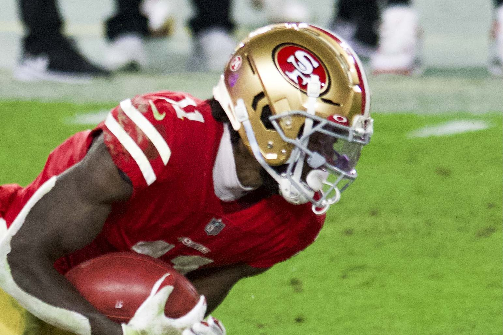

Brandon Aiyuk Is Reporting to the 49ers, and It's the Fastest Way Out of San Francisco

Brandon Aiyuk is coming back to the 49ers. Just not for long, if everybody gets what they want. His new agent, Drew Rosenhaus, told ESPN's Adam Schefter on Wednesday that Aiyuk has turned in paperwork to be reinstated from San Francisco's reserve/left squad list and plans to report to the team facility on Friday. "Brandon is healthy and ready to get back on the field," Rosenhaus said.
Here's the thing, though. Nobody in this story thinks the field is going to be at Levi's Stadium. The 49ers have said Aiyuk will never play for them again, and Aiyuk has spent most of 2026 making it clear he wants to play somewhere else. Reporting isn't a reconciliation. It's the paperwork step that forces San Francisco to finally decide, and the trade deadline is Tuesday, November 10.
The short version
- Aiyuk filed for reinstatement from the reserve/left squad list and is expected at the 49ers facility Friday, November 6, per Rosenhaus via ESPN.
- He hired Rosenhaus on Monday, November 2. Rosenhaus said he's "working on getting him back to work and playing again in the NFL."
- Per Schefter, San Francisco can keep him under his current contract, release him, or find a trade partner before Tuesday's deadline.
- Earlier trade efforts went nowhere, and Pro Football Talk called a release "the likeliest outcome."
- Aiyuk hasn't played an NFL game since October 2024, when he tore his ACL and MCL against Kansas City.
What actually happened this week
It moved fast. On Monday, NFL insider Jordan Schultz reported that Aiyuk was close to hiring new representation and spelled out the catch: "San Francisco holds his rights and Aiyuk needs to file for reinstatement." Later that day Schefter reported the hire was Rosenhaus, who said the goal was getting Aiyuk "back to work and playing again in the NFL."
By Wednesday morning the paperwork was in. That matters because of how the reserve/left squad list works. As ESPN's Nick Wagoner explained back in June, a player with that designation isn't paid and doesn't count against the 90 man roster. It also means the 49ers have had zero urgency. They weren't paying him, so they could sit on his rights forever. Filing to come back flips that. Once he's reinstated and in the building, the team has to make a real roster decision.
Schefter laid out the three options plainly: "Keep him under his current contract, release him or potentially find a trade partner before Tuesday's deadline." Option one is the only one nobody is seriously discussing.
How a 1,342 yard All-Pro got here
It's worth remembering how good Aiyuk was. In 2023 he caught 75 passes for 1,342 yards and seven touchdowns and made the All-Pro second team. He held out the next summer, asked for a trade, and eventually signed a four year, $120 million extension.
| Season | Catches | Yards | TD |
|---|---|---|---|
| 2023 | 75 | 1,342 | 7 |
| 2024 (7 games) | 25 | 374 | 0 |
Then it all came apart. He started slowly in 2024 and tore his ACL and MCL in Week 7 against the Chiefs. During the 2025 season he stopped showing up. He skipped meetings and team activities for long enough that in November 2025 the 49ers voided the rest of the guaranteed money in his deal, roughly $25 million for 2026, and placed him on the reserve/left squad list. Aiyuk told the NFL Players Association not to file a grievance. "We haven't seen him in forever," Kyle Shanahan said that December.
John Lynch closed the door in January. "I think it's safe to say that he's played his last snap with the 49ers," he said. Asked why the relationship went bad, Lynch said, "I wish I knew. I can't help you."
The Washington subplot
Aiyuk hasn't exactly been subtle about where he'd like to land. He played with Jayden Daniels at Arizona State in 2019, and this offseason he campaigned for a move to the Commanders. He posted video in a Commanders hat, follows Daniels and the team, and at one point filmed fake season ticket ads for them. In June he posted a 90 second Instagram clip aimed, by every reasonable reading, at San Francisco: "The truth is they scared. They know how I get."
The problem is Washington never took the bait. The San Francisco Standard reported in June that Commanders GM Adam Peters had passed on trading for him, and there was never firm evidence Washington wanted to give anything up. That's the whole trade market in a nutshell. Every team knows the 49ers want him gone, he hasn't played in more than two years, and there's still an off field issue hanging around. In June, Santa Clara County prosecutors announced a misdemeanor street racing charge tied to a YouTube video of him speeding near Levi's Stadium.
So why would anyone trade for him on Monday when they might be able to sign him for nothing on Wednesday? That logic is why a release looks like the most likely way this ends.
What it means for bettors
Let's be honest about the on field impact this season. Even in the best case, this is a receiver who last played in October 2024, coming off a major knee injury, joining a new team in the middle of a season. Rosenhaus says he's healthy. Nobody outside his camp has seen him play football in two years. Schefter himself said back in March, "We don't know what he's physically going to be like."
For the 49ers, nothing changes on the board. Aiyuk hasn't been part of their offense all year, so there's no spread or total adjustment to make for his exit. If anything, this just ends a distraction that's followed the team since last November.
For whoever signs him, I wouldn't move a number either. Not right away. If Aiyuk lands somewhere and you see receiving props pop up for him in his first couple of games, that's a market guessing at a player with no 2025 or 2026 tape. I'd let him show it first. The 2023 version was one of the best receivers in the league. Whether that guy still exists is the only question that matters, and nobody can answer it yet.
What to watch next
Friday is the first checkpoint. Aiyuk is supposed to be at the facility, and the league has to process the reinstatement. After that, the clock is the November 10 deadline. If no trade comes together, expect the 49ers to cut him and let him pick his next team as a free agent. Washington will be the first name everybody mentions. Whether the Commanders actually want him is a different story, and so far they've answered that one with silence.
Brandon Aiyuk return: quick answers
Is Brandon Aiyuk returning to the 49ers?
He filed paperwork on November 4, 2026 to be reinstated from the reserve/left squad list and plans to report to the facility Friday, November 6, according to agent Drew Rosenhaus via ESPN. The 49ers have said he won't play for them again, so a release or trade is expected.
When is the NFL trade deadline in 2026?
Tuesday, November 10, 2026. Per Adam Schefter, the 49ers can keep Aiyuk, release him, or trade him before then.
Why did the 49ers void Brandon Aiyuk's guarantees?
He skipped meetings and team activities for an extended period during the 2025 season. In November 2025 the team voided the rest of his guaranteed money, about $25 million in 2026, and placed him on the reserve/left squad list.
When did Brandon Aiyuk last play?
October 2024. He tore his ACL and MCL in Week 7 of the 2024 season against the Kansas City Chiefs and hasn't played since.
Reporting is current as of November 4, 2026. Roster moves can happen fast before the deadline, so check the latest news and your book before betting.